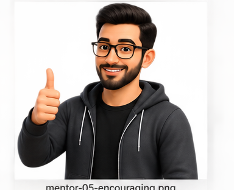

Software Development Process
A software development process transforms an initial system concept into an operational system running in its target environment.
From the Original Lecture
The core definition
A software development process transforms the initial system concept into the operational system running in the target environment. It identifies business needs, conducts a feasibility study, formulates requirements or capabilities, and then designs, implements, tests, and deploys the system.
Visual Process
From concept to operation
 1. System Concept
What problem or opportunity are we addressing?
1. System Concept
What problem or opportunity are we addressing?
 2. Business Need & Feasibility
Is the system useful, realistic, and worth building?
2. Business Need & Feasibility
Is the system useful, realistic, and worth building?
 3. Requirements
What capabilities and constraints must the system satisfy?
3. Requirements
What capabilities and constraints must the system satisfy?
 4. Design
How will the system be structured and how will its parts interact?
4. Design
How will the system be structured and how will its parts interact?

6. Deploy Release the operational system into its target environment.Deliverables
What does each part produce?
Your CLO asks you to understand the life cycle with examples of the deliverables produced by each phase. The exact artifacts vary by methodology, but these are typical examples.
Concept / Feasibility
- Problem statement
- Business case
- Feasibility assessment
- Initial scope
Requirements
- Requirements specification
- User stories / use cases
- Constraints
- Acceptance criteria
Design
- Architecture
- UML models
- Database design
- Interface design
Implementation
- Source code
- Configuration
- Build artifacts
- Technical documentation
Testing
- Test cases
- Test results
- Defect reports
- Quality evidence
Deployment
- Operational release
- Deployment package
- Release notes
- Operational documentation
Modern Example
University registration system
Following one idea through the development process
A development process is not necessarily a rigid one-way sequence. Different methodologies may organize, repeat, or overlap these activities differently. The key idea here is the transformation from concept to operational software.
The development process turns a business need into working software through a connected set of activities: understand the need, determine feasibility, define requirements, design, implement, test, and deploy.
What if we skip requirements and start coding immediately?
Identify at least three risks. Then explain which later activities might become more expensive because the team skipped requirements work.